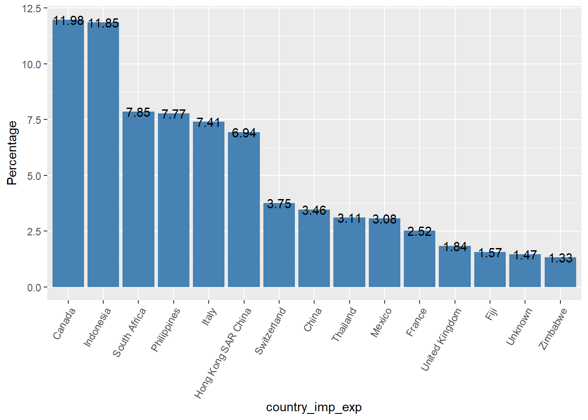

Faunalytics - Wildlife trade dataset
2020-05-20
Chapter 1 Introduction
This report is intended to explore some ideas about LEMI dataset accessed with the lemis R package. LEMIS wildlife trade data trends from 2000 through 2014. You can read more about this dataset Here
1.1 Summary
All the shipments are imports. Only a very small percentage of them was refused by the USFWS (1.73%)
54% of dispositions took place within a month of the shipment date (most of them within a week)
Most problematic countries are on both sides (country of origin & country to/from which the wildlife product is shipped)

These are the American corporations that are importing the most. 
- There has been an upward trend in the amount of dollars spent from 2000 to 2012 (Although we don’t have enough information about this variable in the data produced between 2008-2011 and 2013-2014. For more information, check the section 2.1.1.).
Most of the products are “Live specimens” (29.1%), followed by trophies (16.83%) and “Shell products” (9.49%), mainly import by commercial purposes (74.6%).
Most of the imports are mammals (29.16%), followed by shells (20.34%), reptiles (13.29%) and corals (12.63%)